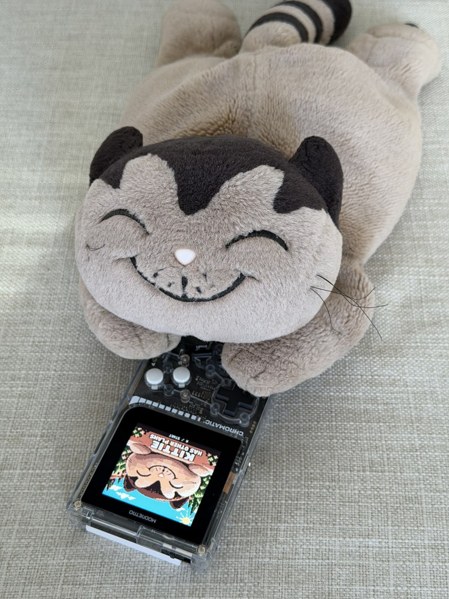

Can AI play as Kittie?
I made a Game Boy game for my wife's plushie as an anniversary gift. Then I gave AI models the controls.
What impressed me was watching them play in real time. The game kept running while each model decided what to do next.

Courtyard
Both models received structured game state without screenshots. Jev completed more attempts and looked more decisive.
Read the experiment →| Model | Finished | API cost / attempt |
|---|---|---|
| Jev | 23/50 | $0.0093 |
| OpenAI Decisions | 12/50 | $0.0414 |
Head Goon
I added screenshots for OpenAI during the boss fight. Its observed completion rate rose, while Jev still completed more attempts.
Read the experiment →| Setup | Finished |
|---|---|
| Jev | 11/30 |
| OpenAI text | 1/30 |
| OpenAI + image | 6/30 |
Teaching a small language model to play
Can demonstrations and reinforcement learning teach a 0.8B model to play Head Goon? I trained Qwen with behavior cloning, then PPO.
| Policy | Wins |
|---|---|
| Pretrained Qwen | 0/50 |
| Behavior cloning | 39/50 |
| PPO15 | 47/50 |
A separate study from the earlier API comparison. Randomized scenarios and limitations are reported in the article.
Methods and data
How the models receive game state, choose controls and play in real time. The methods explain the timing, costs and limits of these exploratory comparisons.
Download results: Courtyard · 100 attemptsHead Goon · 90 attempts